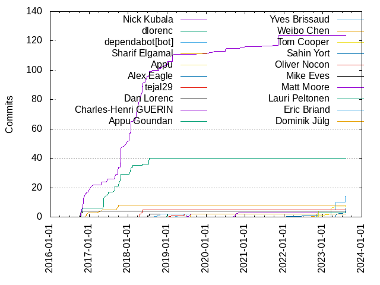

Authors
| Author | Commits (%) | + lines | - lines | First commit | Last commit | Age | Active days | # by commits |
|---|
| Nick Kubala | 124 (47.33%) | 546713 | 469315 | 2016-10-12 | 2021-11-10 | 1854 days, 22:48:40 | 80 | 1 |
| dlorenc | 40 (15.27%) | 7445 | 182883 | 2016-10-14 | 2018-07-18 | 641 days, 22:49:47 | 23 | 2 |
| dependabot[bot] | 10 (3.82%) | 80 | 851 | 2023-03-15 | 2023-05-02 | 47 days, 17:38:42 | 2 | 3 |
| Sharif Elgamal | 8 (3.05%) | 479 | 269 | 2016-11-30 | 2017-10-04 | 307 days, 22:01:10 | 8 | 4 |
| Appu | 7 (2.67%) | 187 | 45 | 2022-11-21 | 2023-05-02 | 161 days, 23:56:48 | 4 | 5 |
| tejal29 | 5 (1.91%) | 98867 | 410 | 2018-04-19 | 2018-05-16 | 27 days, 3:23:16 | 5 | 6 |
| Dan Lorenc | 4 (1.53%) | 143 | 98 | 2016-10-14 | 2016-11-02 | 19 days, 0:27:31 | 3 | 7 |
| Alex Eagle | 4 (1.53%) | 520 | 76 | 2023-05-02 | 2023-07-28 | 86 days, 20:15:24 | 4 | 8 |
| Charles-Henri GUERIN | 3 (1.15%) | 294 | 53 | 2019-08-06 | 2020-11-04 | 455 days, 21:32:25 | 3 | 9 |
| Appu Goundan | 3 (1.15%) | 68 | 3 | 2022-11-03 | 2022-11-18 | 14 days, 23:29:28 | 2 | 10 |
| Yves Brissaud | 2 (0.76%) | 5283 | 192 | 2019-04-24 | 2019-06-04 | 40 days, 22:31:42 | 2 | 11 |
| Weibo Chen | 2 (0.76%) | 18 | 18 | 2022-11-02 | 2022-11-03 | 18:33:07 | 2 | 12 |
| Tom Cooper | 2 (0.76%) | 465 | 120 | 2022-11-17 | 2023-03-15 | 117 days, 23:38:47 | 2 | 13 |
| Sahin Yort | 2 (0.76%) | 198 | 80 | 2022-08-31 | 2022-11-17 | 78 days, 5:29:28 | 2 | 14 |
| Oliver Nocon | 2 (0.76%) | 84 | 2 | 2019-02-19 | 2019-06-19 | 119 days, 22:15:50 | 2 | 15 |
| Mike Eves | 2 (0.76%) | 43 | 8 | 2018-07-12 | 2018-07-20 | 7 days, 22:39:25 | 2 | 16 |
| Matt Moore | 2 (0.76%) | 20 | 8 | 2020-09-30 | 2020-09-30 | 0:21:23 | 1 | 17 |
| Lauri Peltonen | 2 (0.76%) | 37 | 25 | 2019-01-07 | 2019-01-07 | 0:05:56 | 1 | 18 |
| Eric Briand | 2 (0.76%) | 2 | 2 | 2018-10-17 | 2018-10-30 | 12 days, 22:02:40 | 2 | 19 |
| Dominik Jülg | 2 (0.76%) | 17 | 1 | 2019-08-06 | 2019-08-12 | 5 days, 19:29:16 | 2 | 20 |
These didn't make it to the top: Abby Tisdale, Aaron Prindle, sluetze, sharifelgamal, rui, priyawadhwa, fenton, arg2009, Yulia Gaponenko, Yu YI, Xin, Tobias Klauser, Robin Richtsfeld, Peter Evans, Olve S. Hansen, Markus Padourek, Markus Meyer, Loulier Guillaume, Kazuya Yokogawa, Jeff Ching, Jason Hall, Hanyu Cui, Goutam Tadi, Douglas Greiman, Doug Greiman, Damien Duportal, Christian Zunker, Chris Ottinger, Andreas Mosti, Amit Saha, Alex Sloan, Aisuko
Only top 20 authors shown
Only top 20 authors shown
| Month | Author | Commits (%) | Next top 5 | Number of authors |
|---|
| 2023-07 | Alex Eagle | 2 (100.00% of 2) | | 1 |
| 2023-05 | dependabot[bot] | 5 (62.50% of 8) | Alex Eagle, Appu | 3 |
| 2023-03 | dependabot[bot] | 5 (62.50% of 8) | Appu, Tom Cooper | 3 |
| 2022-11 | Appu | 4 (33.33% of 12) | Appu Goundan, Weibo Chen, Tom Cooper, Tobias Klauser, Sahin Yort | 6 |
| 2022-08 | Sahin Yort | 1 (100.00% of 1) | | 1 |
| 2021-11 | Nick Kubala | 8 (80.00% of 10) | rui, Christian Zunker | 3 |
| 2021-04 | Damien Duportal | 1 (100.00% of 1) | | 1 |
| 2021-01 | Nick Kubala | 1 (100.00% of 1) | | 1 |
| 2020-11 | Yulia Gaponenko | 1 (50.00% of 2) | Charles-Henri GUERIN | 2 |
| 2020-09 | Matt Moore | 2 (66.67% of 3) | sluetze | 2 |
| 2020-07 | Nick Kubala | 2 (66.67% of 3) | arg2009 | 2 |
| 2020-03 | Nick Kubala | 1 (50.00% of 2) | Hanyu Cui | 2 |
| 2020-02 | Nick Kubala | 1 (100.00% of 1) | | 1 |
| 2019-09 | fenton | 1 (100.00% of 1) | | 1 |
| 2019-08 | Dominik Jülg | 2 (50.00% of 4) | Charles-Henri GUERIN | 2 |
| 2019-06 | Yves Brissaud | 1 (25.00% of 4) | Oliver Nocon, Loulier Guillaume, Amit Saha | 4 |
| 2019-05 | Aisuko | 1 (100.00% of 1) | | 1 |
| 2019-04 | Yves Brissaud | 1 (100.00% of 1) | | 1 |
| 2019-03 | Nick Kubala | 1 (100.00% of 1) | | 1 |
| 2019-02 | Nick Kubala | 4 (80.00% of 5) | Oliver Nocon | 2 |
| 2019-01 | Nick Kubala | 2 (50.00% of 4) | Lauri Peltonen | 2 |
| 2018-12 | Nick Kubala | 2 (100.00% of 2) | | 1 |
| 2018-11 | Olve S. Hansen | 1 (100.00% of 1) | | 1 |
| 2018-10 | Nick Kubala | 2 (40.00% of 5) | Eric Briand, Peter Evans | 3 |
| 2018-08 | Nick Kubala | 1 (50.00% of 2) | Markus Padourek | 2 |
| 2018-07 | dlorenc | 4 (40.00% of 10) | Nick Kubala, Mike Eves, Markus Meyer | 4 |
| 2018-06 | Nick Kubala | 5 (71.43% of 7) | Xin, Goutam Tadi | 3 |
| 2018-05 | Nick Kubala | 9 (69.23% of 13) | tejal29, dlorenc | 3 |
| 2018-04 | Nick Kubala | 10 (76.92% of 13) | tejal29, Chris Ottinger | 3 |
| 2018-03 | Nick Kubala | 6 (75.00% of 8) | Jason Hall, Andreas Mosti | 3 |
| 2018-02 | dlorenc | 2 (50.00% of 4) | Yu YI, Nick Kubala | 3 |
| 2018-01 | Nick Kubala | 14 (70.00% of 20) | dlorenc, Robin Richtsfeld, Kazuya Yokogawa | 4 |
| 2017-12 | Nick Kubala | 3 (100.00% of 3) | | 1 |
| 2017-11 | Nick Kubala | 1 (50.00% of 2) | Aaron Prindle | 2 |
| 2017-10 | Nick Kubala | 15 (57.69% of 26) | dlorenc, priyawadhwa, Sharif Elgamal, Aaron Prindle | 5 |
| 2017-09 | Nick Kubala | 4 (50.00% of 8) | dlorenc, Sharif Elgamal | 3 |
| 2017-08 | dlorenc | 2 (40.00% of 5) | Nick Kubala, Alex Sloan | 3 |
| 2017-06 | dlorenc | 4 (50.00% of 8) | Nick Kubala, Abby Tisdale | 3 |
| 2017-05 | dlorenc | 7 (77.78% of 9) | Sharif Elgamal, Jeff Ching | 3 |
| 2017-04 | Nick Kubala | 2 (66.67% of 3) | Sharif Elgamal | 2 |
| 2017-03 | Douglas Greiman | 1 (100.00% of 1) | | 1 |
| 2017-02 | Nick Kubala | 1 (100.00% of 1) | | 1 |
| 2017-01 | Nick Kubala | 3 (100.00% of 3) | | 1 |
| 2016-12 | Sharif Elgamal | 2 (33.33% of 6) | Nick Kubala, sharifelgamal, Doug Greiman | 4 |
| 2016-11 | Nick Kubala | 10 (71.43% of 14) | dlorenc, Sharif Elgamal, Dan Lorenc | 4 |
| 2016-10 | Nick Kubala | 6 (46.15% of 13) | dlorenc, Dan Lorenc | 3 |
| Year | Author | Commits (%) | Next top 5 | Number of authors |
|---|
| 2023 | dependabot[bot] | 10 (55.56% of 18) | Alex Eagle, Appu, Tom Cooper | 4 |
| 2022 | Appu | 4 (30.77% of 13) | Appu Goundan, Weibo Chen, Sahin Yort, Tom Cooper, Tobias Klauser | 6 |
| 2021 | Nick Kubala | 9 (75.00% of 12) | rui, Damien Duportal, Christian Zunker | 4 |
| 2020 | Nick Kubala | 4 (36.36% of 11) | Matt Moore, sluetze, arg2009, Yulia Gaponenko, Hanyu Cui | 7 |
| 2019 | Nick Kubala | 7 (33.33% of 21) | Yves Brissaud, Oliver Nocon, Lauri Peltonen, Dominik Jülg, Charles-Henri GUERIN | 10 |
| 2018 | Nick Kubala | 53 (62.35% of 85) | dlorenc, tejal29, Mike Eves, Eric Briand, Yu YI | 17 |
| 2017 | Nick Kubala | 33 (47.83% of 69) | dlorenc, Sharif Elgamal, Abby Tisdale, Aaron Prindle, priyawadhwa | 9 |
| 2016 | Nick Kubala | 18 (54.55% of 33) | dlorenc, Dan Lorenc, Sharif Elgamal, sharifelgamal, Doug Greiman | 6 |
| Domains | Total (%) |
|---|
| users.noreply.github.com | 141 (53.82%) |
|---|
| gmail.com | 53 (20.23%) |
|---|
| google.com | 51 (19.47%) |
|---|
| aspect.dev | 3 (1.15%) |
|---|
| gmx.de | 2 (0.76%) |
|---|
| zenika.com | 1 (0.38%) |
|---|
| ymail.com | 1 (0.38%) |
|---|
| post.harvard.edu | 1 (0.38%) |
|---|
| me.com | 1 (0.38%) |
|---|
| ktech.com | 1 (0.38%) |
|---|